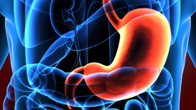

Sistema Digestório
O que é o sistema digestório?
O sistema digestório é o processamento do alimento que ingerimos, promovendo a absorção dos nutrientes nele contidos e a eliminação do material que não será utilizado pelo corpo. Os órgãos que compõem o sistema digestório são a boca, a faringe, o esôfago, o estômago, o intestino delgado, o intestino grosso e o ânus. Já as glândulas acessórias desse sistema são as glândulas salivares, o pâncreas e o fígado.
Resumo de algumas partes do Sistema Digestório:
- Boca: Os dentes promovem a digestão mecânica, garantindo que o alimento seja rasgado, amassado e triturado. Além da atuação dos dentes, o alimento na boca sofre a ação da saliva, a qual é secretada pelas glândulas salivares. A saliva contém a enzima amilase, também conhecida por ptialina, que promove o início da digestão dos carboidratos.
- Língua: Garante que o alimento se misture à saliva e forme o chamado bolo alimentar. É a língua também que ajuda na deglutição do bolo alimentar, empurrando-o em direção à faringe.
- Faringe Atua sobre o amido encontrado na batata, farinha de trigo, arroz e o transformando em moléculas menores de maltose.
- Palato mole: É retraído para cima e a língua empurra o alimento para dentro da faringe, que se contrai voluntariamente e leva o alimento para o esôfago. Muito importante, pois impede que o alimento penetre nas vias respiratórias.
- Esôfago: É o órgão tubular e musculoso que conecta a faringe com o estômago.
- Estômago: o bolo alimentar sofre a ação do suco digestivo, chamado suco gástrico, que é a ele misturado graças à atividade muscular do órgão.
- Fígado: atua como a regulação do metabolismo de vários nutrientes (proteínas, carboidratos e lipídios)
- Bile: A bile apresenta basicamente duas funções primordiais: excreção de algumas substâncias e a emulsão das gorduras, que ajuda na digestão e absorção dos lipídios.
- Instestino Delgado: Nesse órgão a digestão é finalizada e há absorção de nutrientes.
- Instestino Grosso: É responsável pela absorção de água e formação da massa fecal.
- Reto: Abre para o exterior no ânus, por onde as fezes são eliminadas.